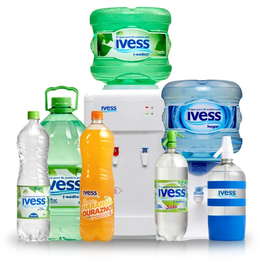

Normas Ivess
En los primeros años de la década del 60, dio comienzo una etapa de fuerte innovación tecnológica que revolucionó todos los campos de la industria, incluido aquel dedicado a la fabricación y envasado de alimentos. En dicho marco, un reducido grupo de fabricantes de soda en sifones advirtió que ésta industria debía sumarse a esta corriente innovadora. A tal fn el 23 de setiembre de 1965 fundaron el INSTITUTO VERIFICADOR DE ELABORACION DE SODA EN SIFONES (IVESS) una entidad con certera visión decidieron encomendar a un selecto equipo de profesionales sanitaristas, químicos y arquitectos, que diseñaran el proyecto de una fabrica de soda en sifones que diera cumplimiento con la totalidad de las solicitaciones ofciales. Y asimismo que dictaran un cuerpo normativo de excelencia en el tratamiento del agua y en la elaboración y envasado del producto, superador de las propias normas gubernamentales y que a la vez fuera dinámico para permitir una constante mejora de la calidad a fn de garantizar la salud del público consumidor. Nacieron así las rigurosas NORMAS IVESS que tienen hoy un amplio reconocimiento por parte del público y de las autoridades de control sanitario.
Fue aquella una época singular en la cual en pocos años se construyeron desde sus cimientos varias fábricas que tenían las maquinarias y sistemas más modernos provistos por la tecnología para la elaboración y el envasado de la soda en sifones. Incluyendo el tratamiento del agua con el sistema ARGOZION que contaba con aparatología que la purifcaba a base de ozono e iones de plata, lográndose así un producto de altísima calidad, completamente apto para la ingesta por el ser humano, en armonía con las mejores aguas del mundo desarrollado. Desde entonces IVESS ha venido siendo siempre pionera en cuanto al dictado de normas que incorporan a los procesos de elaboración, las técnicas y cuidados químicos y bromatológicos más avanzados, yendo siempre por delante de las disposiciones legales en la materia, para que sus asociados puedan ofrecer productos de la máxima calidad a los consumidores.IVESS siempre ha tenido como objetivo prioritario, preservar la salud de la población